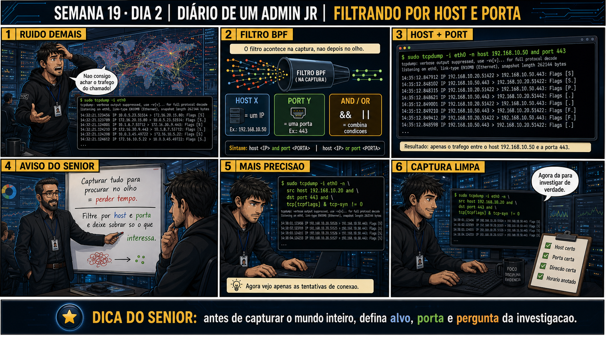

Semana 19 · Dia 2 | Nível Júnior — Redes
tcpdump: Filtro por Host e Porta
filtrar não é esconder informação — é apontar exatamente pro que interessa
ANTES DE ALTERAR, OBSERVE. DEPOIS DE ALTERAR, VALIDE.
1. O chamado
#1902
PRIORIDADE MÉDIA
09:10
aberto por: registro deixado no plantão anterior
host: srv-app-05 · serviço: API de pedidos
"Rodei tcpdump ontem numa VM de produção com bastante tráfego e o terminal virou um mar de linhas — impossível achar o que eu queria."
Antes de tentar de novo, o que muda dessa vez?
💡 Passa o mouse nas palavras destacadas pra ver uma dica rápida — clica se quiser a explicação completa com analogia.
2. Antes de ver as opções — tenta responder
🧠 Recall ativo: qual é a diferença entre tcpdump host 10.10.10.50 e tcpdump port 443, e o que
acontece quando você combina os dois com and?
host 10.10.10.50 mostra qualquer pacote onde esse IP aparece, como origem OU destino, independente da
porta. port 443 mostra qualquer pacote usando essa porta, em qualquer host, como origem OU destino.
Combinando com tcpdump host 10.10.10.50 and port 443, você isola exatamente a conversa entre esse host
específico e qualquer outro, só na porta 443 — a interseção exata dos dois critérios.
3. Questão comentada — clica numa alternativa
Você precisa investigar só o tráfego HTTPS (porta 443) trocado especificamente
com o servidor 10.10.10.50, ignorando qualquer outro tráfego passando pela interface. Qual comando faz isso?
💡 Analogia do Sênior para Fixar: O princípio fundamental de 02 TCPDUMP FILTRO HOST PORTA é como o alicerce de sustentação de um viaduto: garante que a estrutura de comunicação suporte alto tráfego sem colapsar.
4. Decodificador de conceitos
Clica em qualquer termo pra ver a definição completa e uma analogia do dia a dia:
5. Ferramentas e leitura da evidência
| Filtro | O que faz |
|---|---|
host <ip> | Mostra pacotes onde o IP aparece como origem ou destino. |
port <n> | Mostra pacotes usando essa porta, como origem ou destino. |
src / dst | Restringe host ou port apenas à origem ou apenas ao destino. |
$ sudo tcpdump -i eth0 host 10.10.10.50 and port 443 14:40:11 IP 10.10.10.20.52011 > 10.10.10.50.443: Flags [S], seq 100, win 64240, length 0 14:40:11 IP 10.10.10.50.443 > 10.10.10.20.52011: Flags [S.], seq 200, ack 101, win 65160, length 0 14:40:11 IP 10.10.10.20.52011 > 10.10.10.50.443: Flags [.], ack 201, win 502, length 0 --- restringindo só o destino, não a origem --- $ sudo tcpdump -i eth0 dst host 10.10.10.50 and dst port 443 14:41:02 IP 10.10.10.20.52033 > 10.10.10.50.443: Flags [S], seq 300, win 64240, length 0 # só mostra pacotes CHEGANDO em 10.10.10.50:443, não os de resposta saindo de lá
5.1 O painel 4 da prancha de hoje mostra o técnico usando or quando queria and, e recebendo um volume de tráfego enorme por engano
Um colega escreve tcpdump host 10.10.10.50 or port 443 esperando ver só a conversa entre um host específico e a porta 443, mas recebe uma quantidade de tráfego muito maior que o esperado.
Por que usar or em vez de and produziu um volume de tráfego tão maior do que o
esperado?
💡 Analogia do Sênior para Fixar: Diagnosticar anomalias em 02 TCPDUMP FILTRO HOST PORTA é como o eletricista usando o multímetro no quadro de disjuntores: mede a passagem de sinal no ponto exato da falha.
5.2 "host filtra só pacotes de saída, certo?"
Um colega acha que o filtro host 10.10.10.50 mostra só pacotes SAINDO daquele IP, não os que chegam nele.
Por que o filtro host, sozinho, mostra tráfego nos dois sentidos (origem E
destino), e não só um deles?
💡 Analogia do Sênior para Fixar: Aplicar as boas práticas de 02 TCPDUMP FILTRO HOST PORTA é como o protocolo de segurança da aviação: elimina pontos únicos de falha e garante previsibilidade operacional.
6. Procedimento profissional
- Identifique exatamente o host e/ou porta relevantes pra investigação antes de capturar.
- Use host <ip> e/ou port <n> como filtros na linha de comando do tcpdump.
- Combine critérios com and quando precisar da interseção exata; use or só quando quiser uma união deliberada.
- Use src/dst quando precisar restringir o filtro a um sentido só do tráfego.
- Confirme visualmente que o volume de linhas ficou administrável antes de deixar a captura rodando por mais tempo.
7. Laboratório guiado — marca conforme for testando
Segurança: execute os testes apenas em VM descartável e confirme nomes de discos, hosts e arquivos antes de cada comando.
- Numa VM de laboratório, rode tcpdump -i eth0 sem filtro por alguns segundos e observe o volume de linhas.$ sudo tcpdump -i eth0 -nResultado esperado: várias linhas de tráfego não relacionado ao que te interessa.
- Rode de novo com host <ip de outra VM> e gere tráfego só com ela.$ sudo tcpdump -i eth0 -n host 10.10.10.50Resultado esperado: só pacotes envolvendo esse IP específico aparecem.🧑🏫 Aqui entra o Mentor (em breve): se o volume ainda parecer alto demais, este é o ponto onde o chat com o Sênior-IA vai te ajudar a combinar mais critérios.
Se o seu resultado foi diferente
Nenhum pacote aparece mesmo gerando tráfego com essa VM → confirme que10.10.10.50é realmente o IP da outra VM — rodeip anela pra ter certeza. Um IP errado no filtro simplesmente não bate com nada, sem nenhum erro na tela. - Combine host e port com and, testando contra uma porta específica de serviço ativo na VM.$ sudo tcpdump -i eth0 -n host 10.10.10.50 and port 80
🔍 Detalhar esse comando
- host 10.10.10.50
- Mostra pacotes onde esse IP aparece como origem OU destino — qualquer papel.
- and
- Operador lógico E: só mostra o pacote se ELE bater nos dois critérios ao mesmo tempo — interseção exata, não união.
- port 80
- Mostra pacotes usando essa porta, também como origem ou destino, em qualquer host.
Resultado esperado: apenas o tráfego que bate nos dois critérios simultaneamente.Se o seu resultado foi diferente
Nenhum pacote aparece, mesmo com o host certo → confirme que existe algum serviço realmente escutando na porta 80 dessa VM comsudo ss -tulnp | grep :80. Sem serviço ativo na porta, não há tráfego pra capturar ali — troque pra uma porta que tenha algo escutando. - Teste dst host e src host separadamente, e compare a diferença de resultado.$ sudo tcpdump -i eth0 -n dst host 10.10.10.50 $ sudo tcpdump -i eth0 -n src host 10.10.10.50
🔍 Detalhar esse comando
- dst host 10.10.10.50
- Restringe o filtro
hosta pacotes onde esse IP aparece especificamente como DESTINO — só o que está chegando nele. - src host 10.10.10.50
- Restringe o filtro
hosta pacotes onde esse IP aparece especificamente como ORIGEM — só o que está saindo dele.
Resultado esperado: cada filtro mostrando só um sentido do tráfego.Se o seu resultado foi diferente
dst hostnão mostra nada, mashostsozinho (semdst) mostrava tráfego normalmente → normal, e é exatamente o ponto do exercício:dst hostsó pega pacotes CHEGANDO nesse IP. Se o tráfego que você gerou tinha esse IP como origem (respondendo pra você), ele não aparece aqui — apareceria emsrc host.
Não sei qual IP usar em cada teste → use o IP da outra VM do laboratório nos dois testes (dst hostesrc host) e gere tráfego nos dois sentidos (ex.: um ping saindo e a resposta chegando) pra ver a diferença na prática.
8. Validação e encerramento
- host filtra por IP em qualquer papel (origem ou destino); port filtra por porta do mesmo jeito.
- and cria interseção exata dos critérios; or cria união mais ampla.
- src/dst restringem host ou port a um sentido só do tráfego.
- Um filtro bem escrito reduz o volume de linhas ao que realmente importa pra investigação.
Rollback e limites
Filtros de captura são só sintaxe de exibição/captura — não alteram tráfego real
nem configuração de rede, então são seguros de testar e ajustar quantas vezes precisar. O cuidado real é
lógico: confundir and com or muda completamente o volume e o significado do que você está vendo, sem nenhum
aviso de erro — o comando roda normalmente dos dois jeitos.
💡 Sobre repetição espaçada: a lógica and/or de filtros de rede é a mesma
lógica booleana que reaparece em qualquer ferramenta de busca ou consulta — vale reforçar o padrão geral, não
só a sintaxe específica do tcpdump. O Anki vai conectar os dois.
9. Resposta final
Alternativa correta: A. Nesta aula, o comando certo combinou host e port
com and pra isolar exatamente a conversa pedida. O ponto central do caso é este: filtrar não é esconder
informação — é apontar exatamente pro que interessa.
🔓 O que você desbloqueou hoje
Capacidade de isolar tráfego relevante com host, port, and, or, src e dst.
Amanhã você aprende a ler o handshake TCP completo dentro de uma captura — os três primeiros pacotes que
abrem qualquer conversa TCP.